-
verifyingDisplaySizeFilterFunctionality_Mobile_21-32-35
9:32:48 PM / 00:07:42:875 Fail
verifyingDisplaySizeFilterFunctionality_Mobile_21-32-35
09.29.2026 9:32:48 PM 09.29.2026 9:40:31 PM 00:07:42:875 · #test-id=1Status Timestamp Details Info 9:32:48 PM Test Input Parameter: Mobile Fail 9:40:31 PM Info 9:40:31 PM 📂 Logs: Info 9:40:31 PM 📄 verifyingDisplaySizeFilterFunctionality_Mobile_21-32-35.log Info 9:40:31 PM 📸 Screenshots: Info 9:40:31 PM 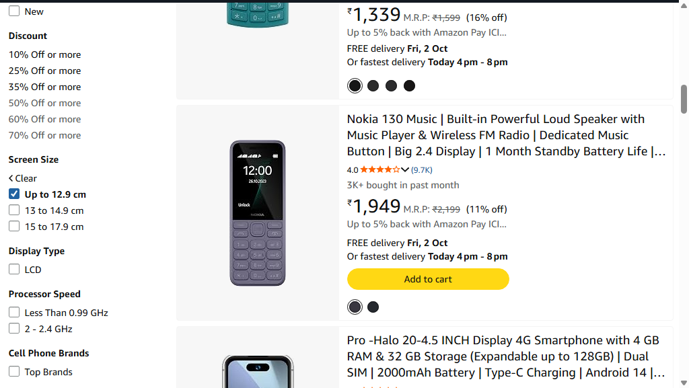
Info 9:40:31 PM 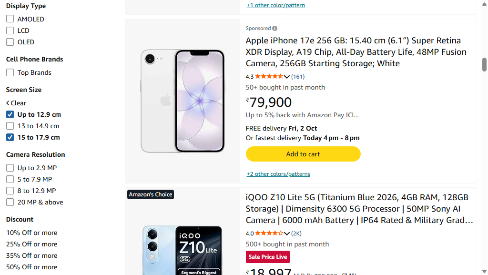
-
verifyingBatteryCapacityFilterFunctionality_Mobile_21-32-35
9:32:48 PM / 00:04:37:181 Fail
verifyingBatteryCapacityFilterFunctionality_Mobile_21-32-35
09.29.2026 9:32:48 PM 09.29.2026 9:37:26 PM 00:04:37:181 · #test-id=2Status Timestamp Details Info 9:32:48 PM Test Input Parameter: Mobile Fail 9:37:26 PM Info 9:37:26 PM 📂 Logs: Info 9:37:26 PM 📄 verifyingBatteryCapacityFilterFunctionality_Mobile_21-32-35.log Info 9:37:26 PM 📸 Screenshots: Info 9:37:26 PM 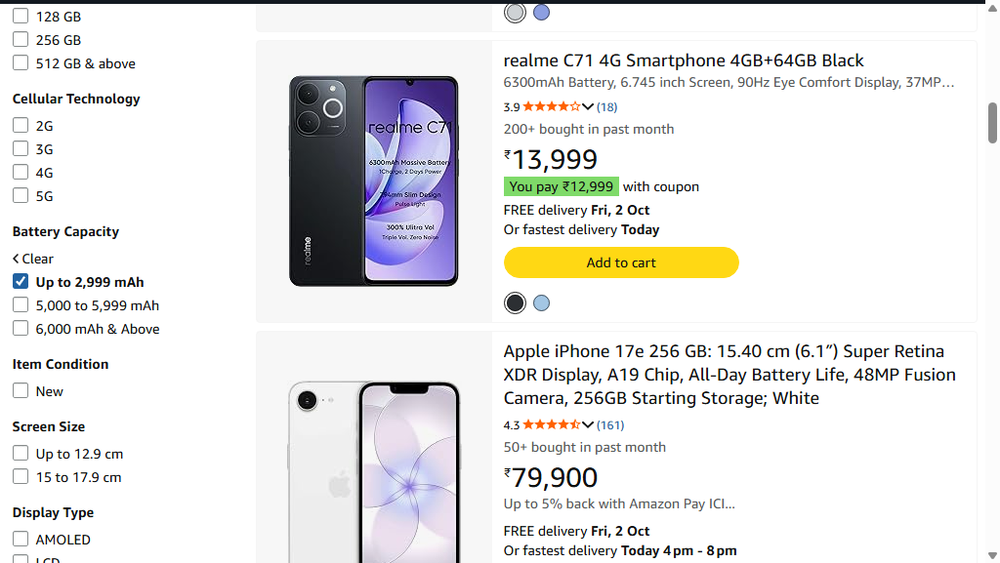
Info 9:37:26 PM 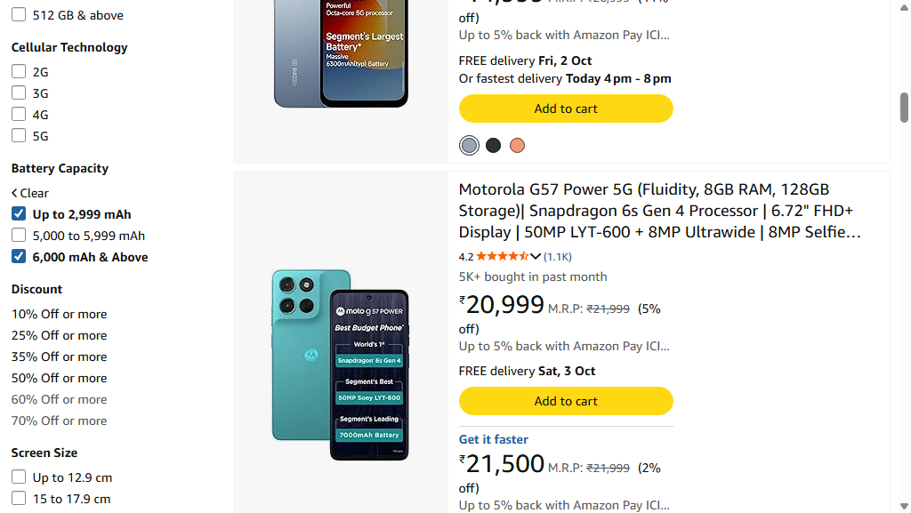
-
verifyingDiscountFilterFunctionality_Mobile_21-32-35
9:32:48 PM / 00:11:48:849 Fail
verifyingDiscountFilterFunctionality_Mobile_21-32-35
09.29.2026 9:32:48 PM 09.29.2026 9:44:37 PM 00:11:48:849 · #test-id=3Status Timestamp Details Info 9:32:48 PM Test Input Parameter: Mobile Fail 9:44:37 PM Info 9:44:37 PM 📂 Logs: Info 9:44:37 PM 📄 verifyingDiscountFilterFunctionality_Mobile_21-32-35.log Info 9:44:37 PM 📸 Screenshots: Info 9:44:37 PM 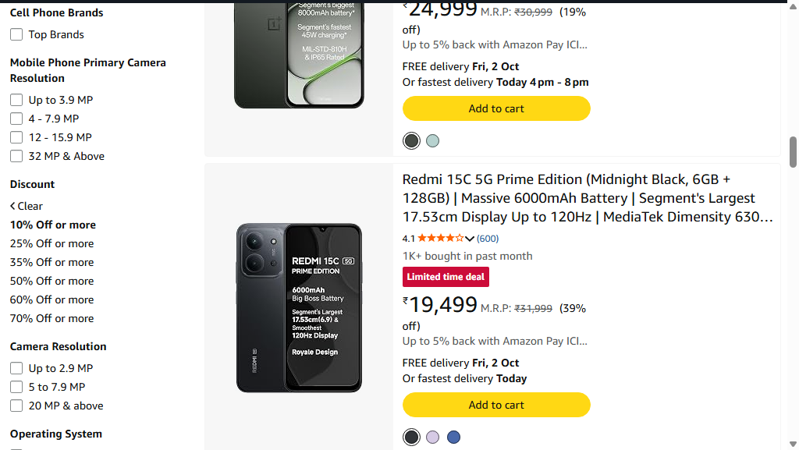
Info 9:44:37 PM 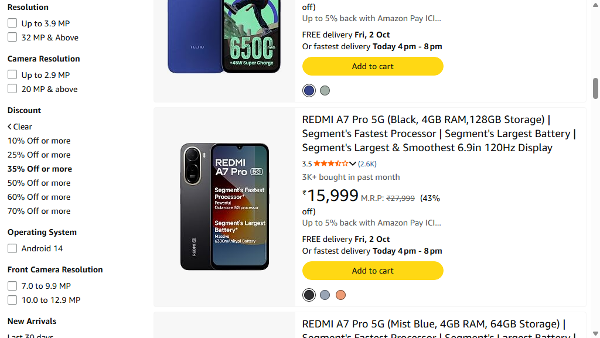
Info 9:44:37 PM 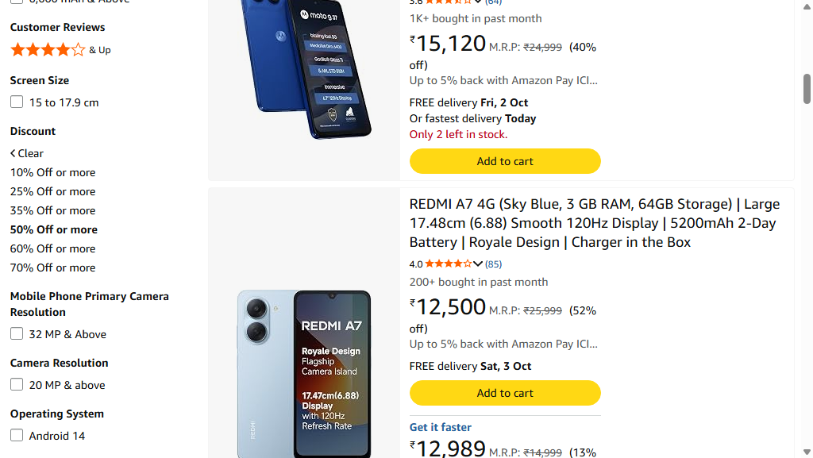
Info 9:44:37 PM 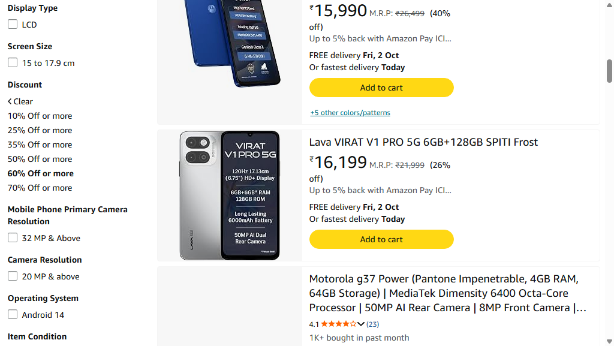
Info 9:44:37 PM 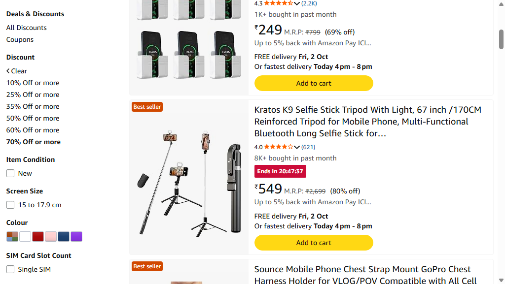
-
verifyingBatteryCapacityFilterFunctionality_Laptop_21-37-27
9:37:29 PM / 00:00:13:727 Pass
verifyingBatteryCapacityFilterFunctionality_Laptop_21-37-27
09.29.2026 9:37:29 PM 09.29.2026 9:37:42 PM 00:00:13:727 · #test-id=4Status Timestamp Details Info 9:37:29 PM Test Input Parameter: Laptop Pass 9:37:42 PM Test Passed Info 9:37:42 PM 📂 Logs: Info 9:37:42 PM 📄 verifyingBatteryCapacityFilterFunctionality_Laptop_21-37-27.log -
verifyingBatteryCapacityFilterFunctionality_Tablet_21-37-43
9:37:44 PM / 00:00:05:532 Pass
verifyingBatteryCapacityFilterFunctionality_Tablet_21-37-43
09.29.2026 9:37:44 PM 09.29.2026 9:37:50 PM 00:00:05:532 · #test-id=5Status Timestamp Details Info 9:37:44 PM Test Input Parameter: Tablet Pass 9:37:50 PM Test Passed Info 9:37:50 PM 📂 Logs: Info 9:37:50 PM 📄 verifyingBatteryCapacityFilterFunctionality_Tablet_21-37-43.log -
verifyingDisplayTypeFilterFunctionality_Mobile_21-37-50
9:37:51 PM / 00:02:18:298 Fail
verifyingDisplayTypeFilterFunctionality_Mobile_21-37-50
09.29.2026 9:37:51 PM 09.29.2026 9:40:09 PM 00:02:18:298 · #test-id=6Status Timestamp Details Info 9:37:51 PM Test Input Parameter: Mobile Fail 9:40:09 PM Info 9:40:09 PM 📂 Logs: Info 9:40:09 PM 📄 verifyingDisplayTypeFilterFunctionality_Mobile_21-37-50.log Info 9:40:09 PM 📸 Screenshots: Info 9:40:09 PM 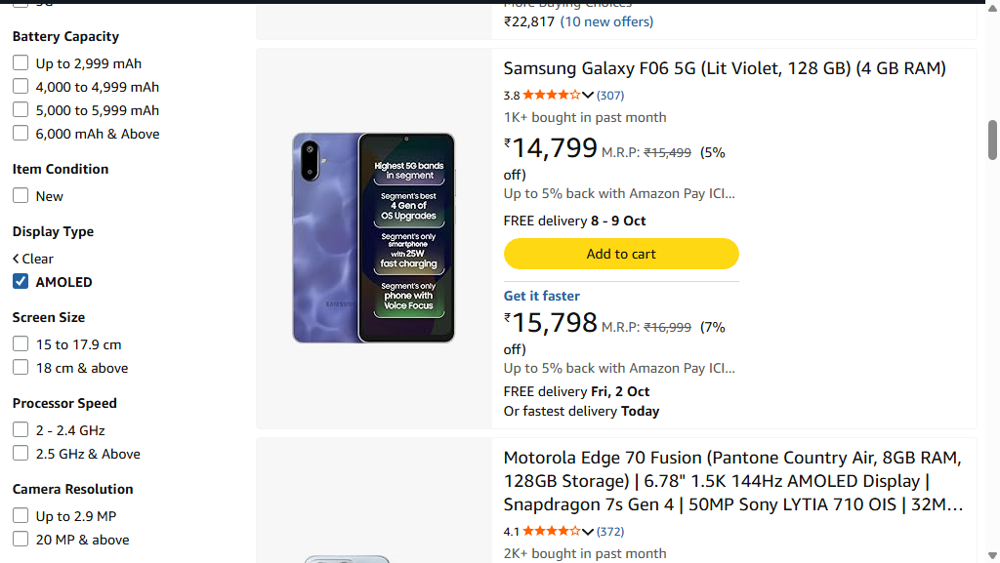
-
verifyingDisplayTypeFilterFunctionality_Laptop_21-40-12
9:40:16 PM / 00:04:19:916 Fail
verifyingDisplayTypeFilterFunctionality_Laptop_21-40-12
09.29.2026 9:40:16 PM 09.29.2026 9:44:36 PM 00:04:19:916 · #test-id=7Status Timestamp Details Info 9:40:16 PM Test Input Parameter: Laptop Fail 9:44:36 PM Info 9:44:36 PM 📂 Logs: Info 9:44:36 PM 📄 verifyingDisplayTypeFilterFunctionality_Laptop_21-40-12.log Info 9:44:36 PM 📸 Screenshots: Info 9:44:36 PM Info 9:44:36 PM -
verifyingDisplaySizeFilterFunctionality_Laptop_21-40-32
9:40:34 PM / 00:13:39:011 Fail
verifyingDisplaySizeFilterFunctionality_Laptop_21-40-32
09.29.2026 9:40:34 PM 09.29.2026 9:54:13 PM 00:13:39:011 · #test-id=8Status Timestamp Details Info 9:40:34 PM Test Input Parameter: Laptop Fail 9:54:13 PM Info 9:54:13 PM 📂 Logs: Info 9:54:13 PM 📄 verifyingDisplaySizeFilterFunctionality_Laptop_21-40-32.log Info 9:54:13 PM 📸 Screenshots: Info 9:54:13 PM 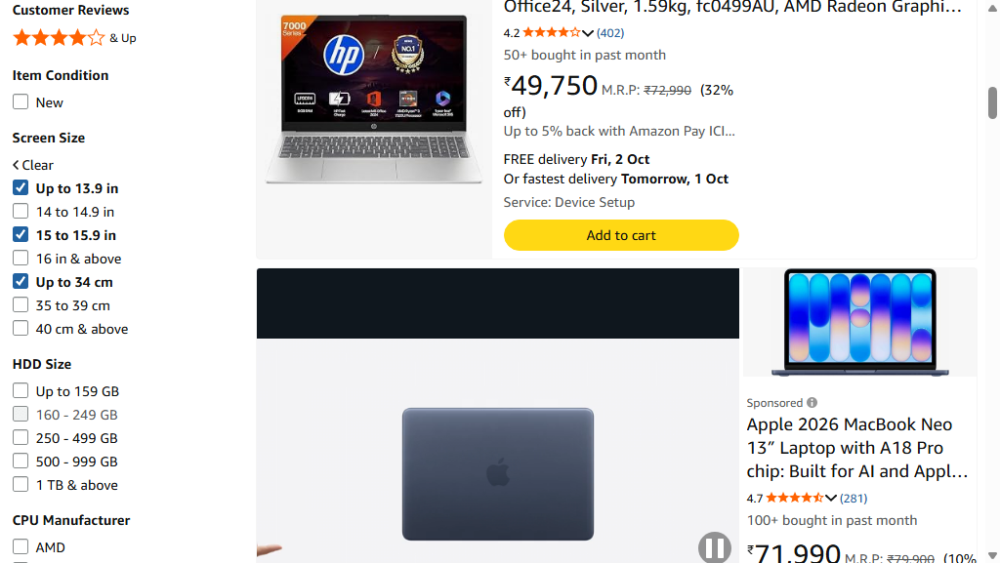
Info 9:54:13 PM 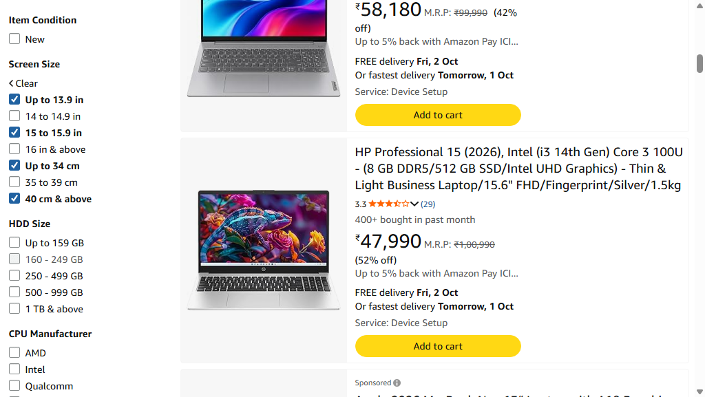
Info 9:54:13 PM 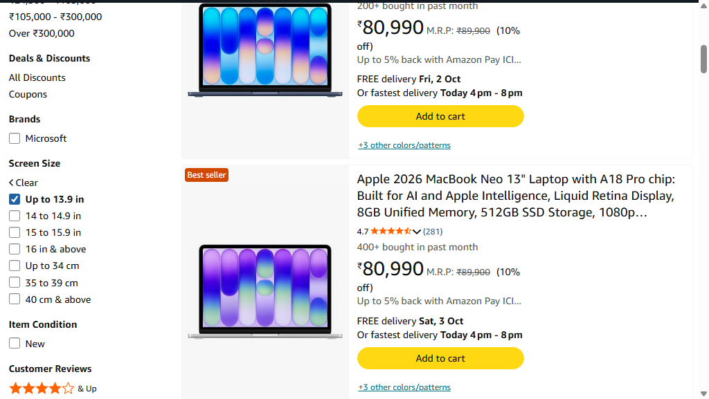
Info 9:54:13 PM 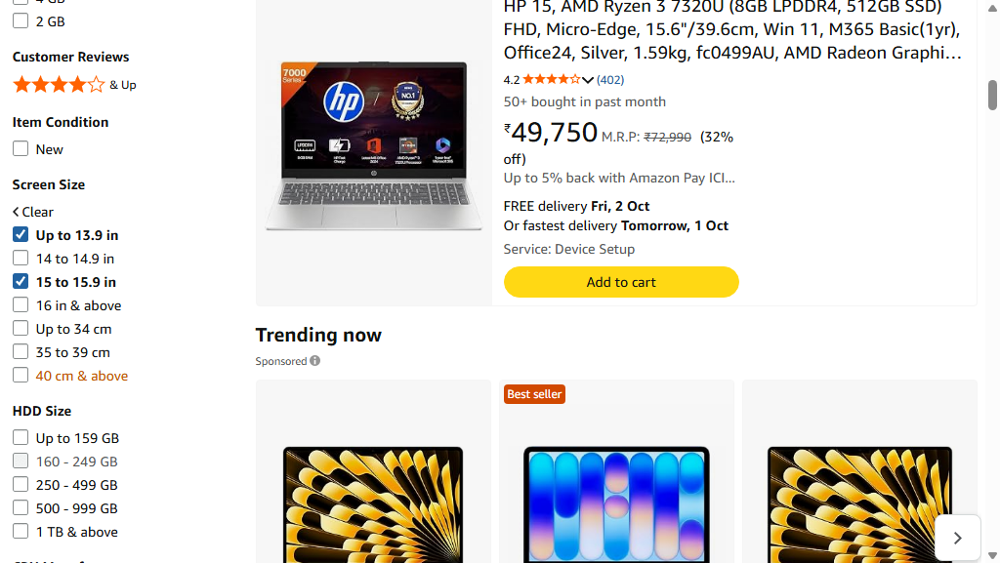
-
verifyingDisplayTypeFilterFunctionality_Tablet_21-44-40
9:44:41 PM / 00:04:34:592 Fail
verifyingDisplayTypeFilterFunctionality_Tablet_21-44-40
09.29.2026 9:44:41 PM 09.29.2026 9:49:16 PM 00:04:34:592 · #test-id=9Status Timestamp Details Info 9:44:41 PM Test Input Parameter: Tablet Fail 9:49:16 PM Info 9:49:16 PM 📂 Logs: Info 9:49:16 PM 📄 verifyingDisplayTypeFilterFunctionality_Tablet_21-44-40.log Info 9:49:16 PM 📸 Screenshots: Info 9:49:16 PM 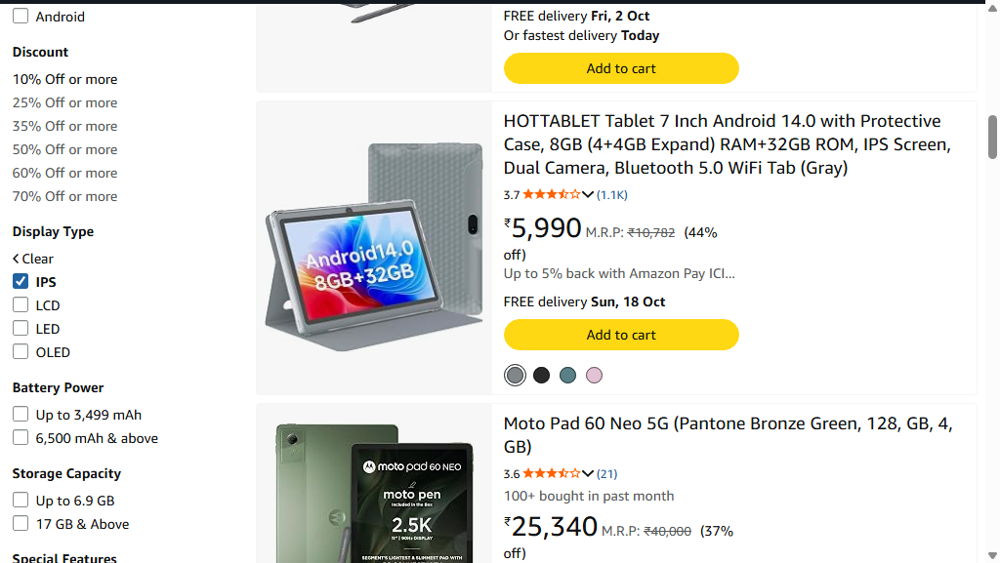
Info 9:49:16 PM 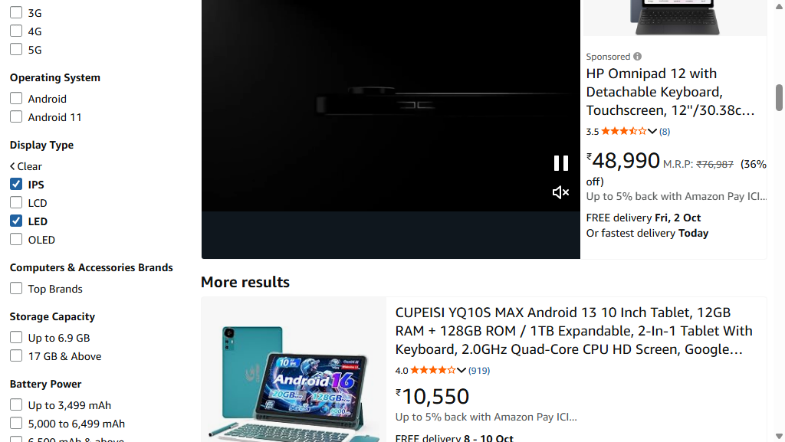
-
verifyingDiscountFilterFunctionality_Laptop_21-44-41
9:44:42 PM / 00:08:26:413 Fail
verifyingDiscountFilterFunctionality_Laptop_21-44-41
09.29.2026 9:44:42 PM 09.29.2026 9:53:09 PM 00:08:26:413 · #test-id=10Status Timestamp Details Info 9:44:42 PM Test Input Parameter: Laptop Fail 9:53:09 PM Info 9:53:09 PM 📂 Logs: Info 9:53:09 PM 📄 verifyingDiscountFilterFunctionality_Laptop_21-44-41.log Info 9:53:09 PM 📸 Screenshots: Info 9:53:09 PM Info 9:53:09 PM Info 9:53:09 PM 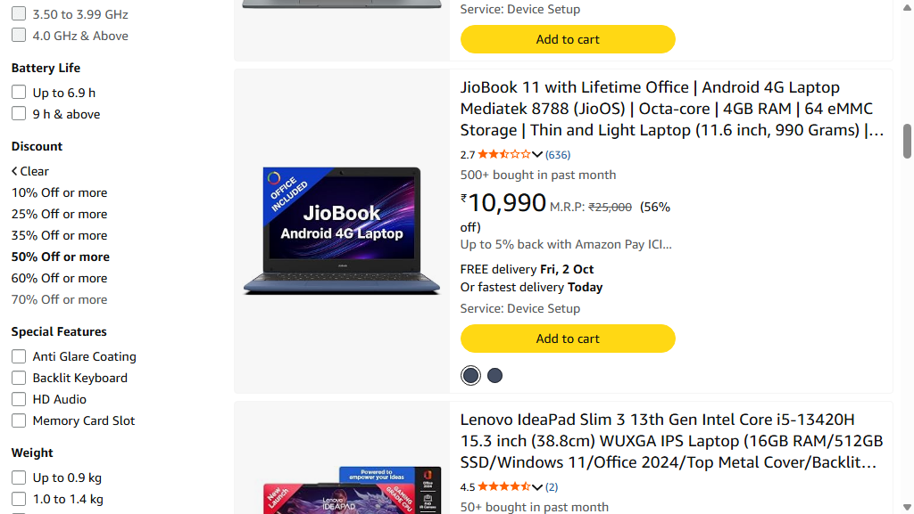
-
verifyingFreeDeliveryFilterFunctionality_Mobile_21-49-17
9:49:18 PM / 00:00:19:339 Pass
verifyingFreeDeliveryFilterFunctionality_Mobile_21-49-17
09.29.2026 9:49:18 PM 09.29.2026 9:49:37 PM 00:00:19:339 · #test-id=11Status Timestamp Details Info 9:49:18 PM Test Input Parameter: Mobile Pass 9:49:37 PM Test Passed Info 9:49:37 PM 📂 Logs: Info 9:49:37 PM 📄 verifyingFreeDeliveryFilterFunctionality_Mobile_21-49-17.log -
verifyingFreeDeliveryFilterFunctionality_Laptop_21-49-38
9:49:39 PM / 00:00:10:469 Pass
verifyingFreeDeliveryFilterFunctionality_Laptop_21-49-38
09.29.2026 9:49:39 PM 09.29.2026 9:49:49 PM 00:00:10:469 · #test-id=12Status Timestamp Details Info 9:49:39 PM Test Input Parameter: Laptop Pass 9:49:49 PM Test Passed Info 9:49:49 PM 📂 Logs: Info 9:49:49 PM 📄 verifyingFreeDeliveryFilterFunctionality_Laptop_21-49-38.log Info 9:49:49 PM 📸 Screenshots: Info 9:49:49 PM -
verifyingFreeDeliveryFilterFunctionality_Tablet_21-49-50
9:49:51 PM / 00:00:07:245 Pass
verifyingFreeDeliveryFilterFunctionality_Tablet_21-49-50
09.29.2026 9:49:51 PM 09.29.2026 9:49:58 PM 00:00:07:245 · #test-id=13Status Timestamp Details Info 9:49:51 PM Test Input Parameter: Tablet Pass 9:49:58 PM Test Passed Info 9:49:58 PM 📂 Logs: Info 9:49:58 PM 📄 verifyingFreeDeliveryFilterFunctionality_Tablet_21-49-50.log Info 9:49:58 PM 📸 Screenshots: Info 9:49:58 PM -
verifyingGetItByTodayFilterFunctionality_Mobile_21-49-59
9:50:01 PM / 00:00:09:019 Pass
verifyingGetItByTodayFilterFunctionality_Mobile_21-49-59
09.29.2026 9:50:01 PM 09.29.2026 9:50:10 PM 00:00:09:019 · #test-id=14Status Timestamp Details Info 9:50:01 PM Test Input Parameter: Mobile Pass 9:50:10 PM Test Passed Info 9:50:10 PM 📂 Logs: Info 9:50:10 PM 📄 verifyingGetItByTodayFilterFunctionality_Mobile_21-49-59.log Info 9:50:10 PM 📸 Screenshots: Info 9:50:10 PM 
Info 9:50:10 PM Info 9:50:10 PM 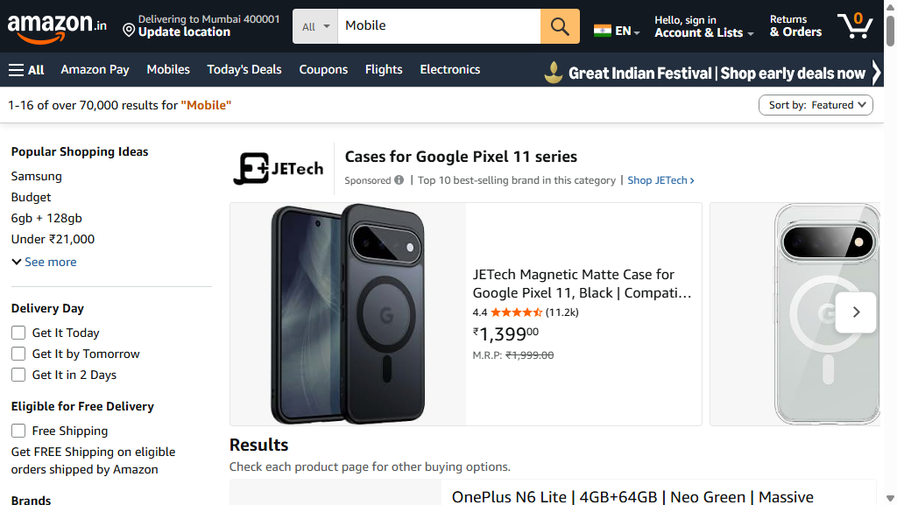
Info 9:50:10 PM 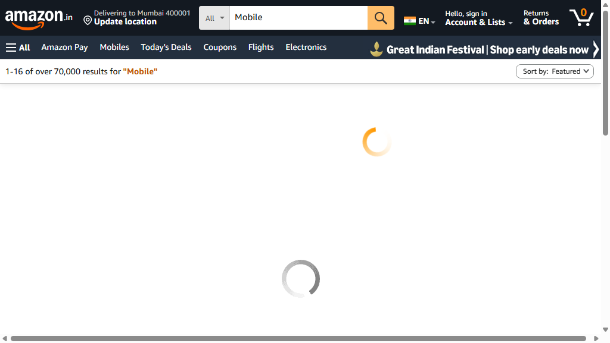
-
verifyingGetItByTodayFilterFunctionality_Laptop_21-50-10
9:50:11 PM / 00:00:17:440 Pass
verifyingGetItByTodayFilterFunctionality_Laptop_21-50-10
09.29.2026 9:50:11 PM 09.29.2026 9:50:29 PM 00:00:17:440 · #test-id=15Status Timestamp Details Info 9:50:11 PM Test Input Parameter: Laptop Pass 9:50:29 PM Test Passed Info 9:50:29 PM 📂 Logs: Info 9:50:29 PM 📄 verifyingGetItByTodayFilterFunctionality_Laptop_21-50-10.log Info 9:50:29 PM 📸 Screenshots: Info 9:50:29 PM 
Info 9:50:29 PM Info 9:50:29 PM -
verifyingGetItByTodayFilterFunctionality_Tablet_21-50-29
9:50:31 PM / 00:00:14:572 Pass
verifyingGetItByTodayFilterFunctionality_Tablet_21-50-29
09.29.2026 9:50:31 PM 09.29.2026 9:50:45 PM 00:00:14:572 · #test-id=16Status Timestamp Details Info 9:50:31 PM Test Input Parameter: Tablet Pass 9:50:45 PM Test Passed Info 9:50:45 PM 📂 Logs: Info 9:50:45 PM 📄 verifyingGetItByTodayFilterFunctionality_Tablet_21-50-29.log Info 9:50:45 PM 📸 Screenshots: Info 9:50:45 PM 
Info 9:50:45 PM Info 9:50:45 PM 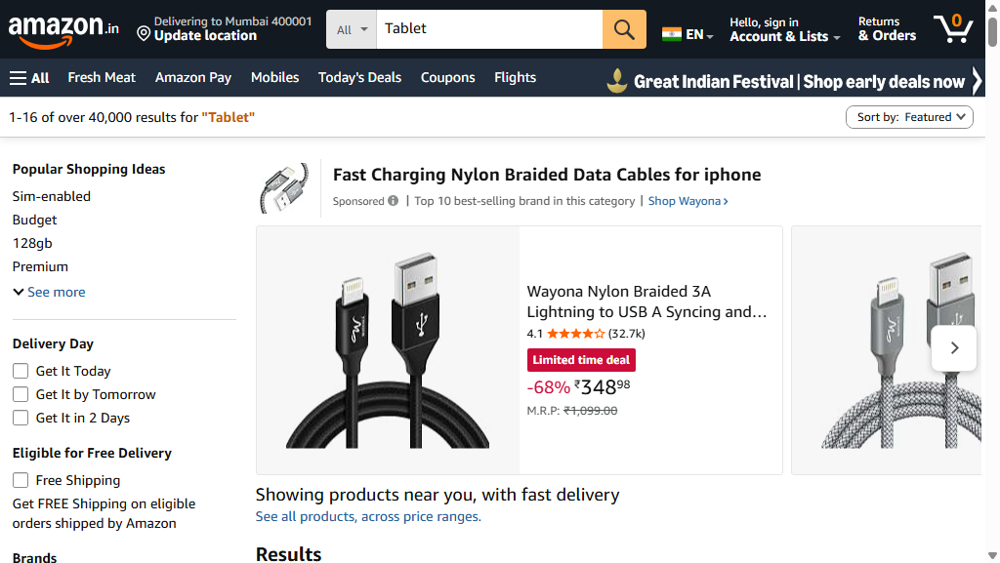
Info 9:50:45 PM -
verifyingGetItByTomorrowFilterFunctionality_Mobile_21-50-46
9:50:47 PM / 00:00:09:516 Pass
verifyingGetItByTomorrowFilterFunctionality_Mobile_21-50-46
09.29.2026 9:50:47 PM 09.29.2026 9:50:56 PM 00:00:09:516 · #test-id=17Status Timestamp Details Info 9:50:47 PM Test Input Parameter: Mobile Pass 9:50:56 PM Test Passed Info 9:50:56 PM 📂 Logs: Info 9:50:56 PM 📄 verifyingGetItByTomorrowFilterFunctionality_Mobile_21-50-46.log Info 9:50:56 PM 📸 Screenshots: Info 9:50:56 PM Info 9:50:56 PM -
verifyingGetItByTomorrowFilterFunctionality_Laptop_21-50-57
9:50:59 PM / 00:00:09:826 Pass
verifyingGetItByTomorrowFilterFunctionality_Laptop_21-50-57
09.29.2026 9:50:59 PM 09.29.2026 9:51:08 PM 00:00:09:826 · #test-id=18Status Timestamp Details Info 9:50:59 PM Test Input Parameter: Laptop Pass 9:51:08 PM Test Passed Info 9:51:08 PM 📂 Logs: Info 9:51:08 PM 📄 verifyingGetItByTomorrowFilterFunctionality_Laptop_21-50-57.log Info 9:51:08 PM 📸 Screenshots: Info 9:51:08 PM Info 9:51:08 PM -
verifyingGetItByTomorrowFilterFunctionality_Tablet_21-51-09
9:51:11 PM / 00:00:07:888 Pass
verifyingGetItByTomorrowFilterFunctionality_Tablet_21-51-09
09.29.2026 9:51:11 PM 09.29.2026 9:51:19 PM 00:00:07:888 · #test-id=19Status Timestamp Details Info 9:51:11 PM Test Input Parameter: Tablet Pass 9:51:19 PM Test Passed Info 9:51:19 PM 📂 Logs: Info 9:51:19 PM 📄 verifyingGetItByTomorrowFilterFunctionality_Tablet_21-51-09.log Info 9:51:19 PM 📸 Screenshots: Info 9:51:19 PM 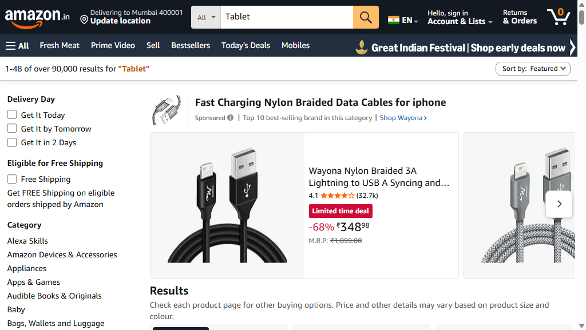
Info 9:51:19 PM -
verifyingGetItIn2DaysFilterFunctionality_Mobile_21-51-19
9:51:21 PM / 00:00:16:990 Pass
verifyingGetItIn2DaysFilterFunctionality_Mobile_21-51-19
09.29.2026 9:51:21 PM 09.29.2026 9:51:38 PM 00:00:16:990 · #test-id=20Status Timestamp Details Info 9:51:21 PM Test Input Parameter: Mobile Pass 9:51:38 PM Test Passed Info 9:51:38 PM 📂 Logs: Info 9:51:38 PM 📄 verifyingGetItIn2DaysFilterFunctionality_Mobile_21-51-19.log Info 9:51:38 PM 📸 Screenshots: Info 9:51:38 PM 
Info 9:51:38 PM -
verifyingGetItIn2DaysFilterFunctionality_Laptop_21-51-39
9:51:42 PM / 00:00:13:476 Pass
verifyingGetItIn2DaysFilterFunctionality_Laptop_21-51-39
09.29.2026 9:51:42 PM 09.29.2026 9:51:55 PM 00:00:13:476 · #test-id=21Status Timestamp Details Info 9:51:42 PM Test Input Parameter: Laptop Pass 9:51:55 PM Test Passed Info 9:51:55 PM 📂 Logs: Info 9:51:55 PM 📄 verifyingGetItIn2DaysFilterFunctionality_Laptop_21-51-39.log Info 9:51:55 PM 📸 Screenshots: Info 9:51:55 PM 
Info 9:51:55 PM -
verifyingGetItIn2DaysFilterFunctionality_Tablet_21-51-55
9:51:57 PM / 00:00:11:233 Pass
verifyingGetItIn2DaysFilterFunctionality_Tablet_21-51-55
09.29.2026 9:51:57 PM 09.29.2026 9:52:08 PM 00:00:11:233 · #test-id=22Status Timestamp Details Info 9:51:57 PM Test Input Parameter: Tablet Pass 9:52:08 PM Test Passed Info 9:52:08 PM 📂 Logs: Info 9:52:08 PM 📄 verifyingGetItIn2DaysFilterFunctionality_Tablet_21-51-55.log Info 9:52:08 PM 📸 Screenshots: Info 9:52:08 PM 
Info 9:52:08 PM -
verifyingMobilePhonePrimaryCameraResolutionFilterFunctionality_Mobile_21-52-09
9:52:10 PM / 00:27:53:963 Fail
verifyingMobilePhonePrimaryCameraResolutionFilterFunctionality_Mobile_21-52-09
09.29.2026 9:52:10 PM 09.29.2026 10:20:04 PM 00:27:53:963 · #test-id=23Status Timestamp Details Info 9:52:10 PM Test Input Parameter: Mobile Fail 10:20:04 PM Info 10:20:04 PM 📂 Logs: Info 10:20:04 PM 📄 verifyingMobilePhonePrimaryCameraResolutionFilterFunctionality_Mobile_21-52-09.log Info 10:20:04 PM 📸 Screenshots: Info 10:20:04 PM 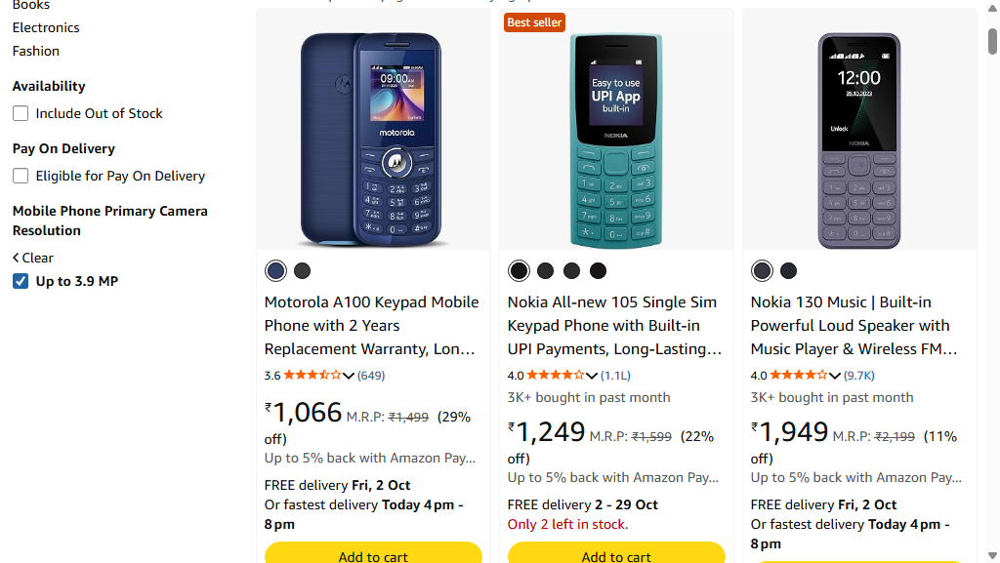
Info 10:20:04 PM 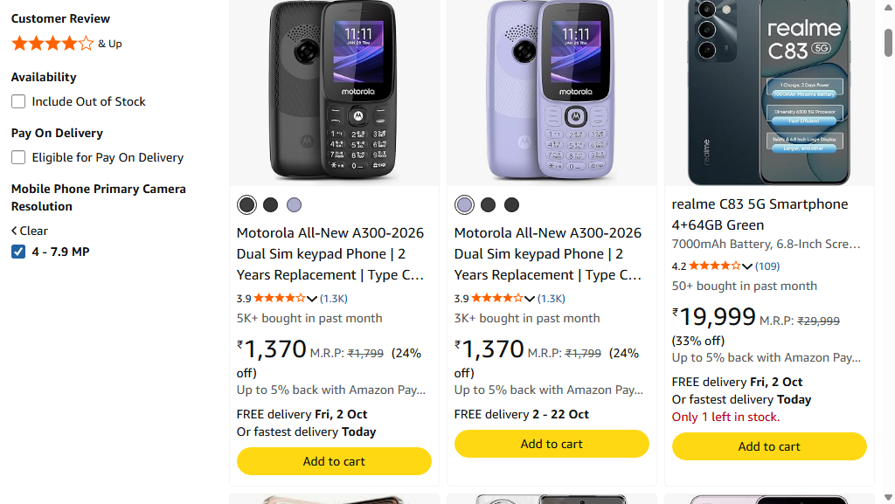
Info 10:20:04 PM 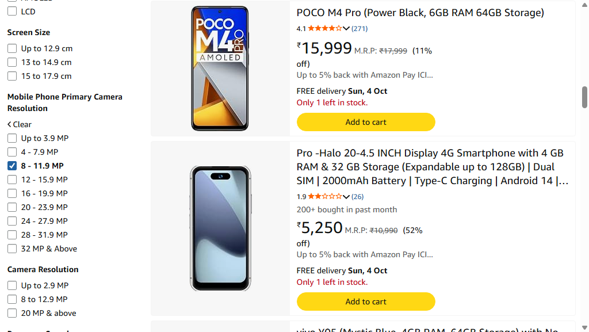
Info 10:20:04 PM 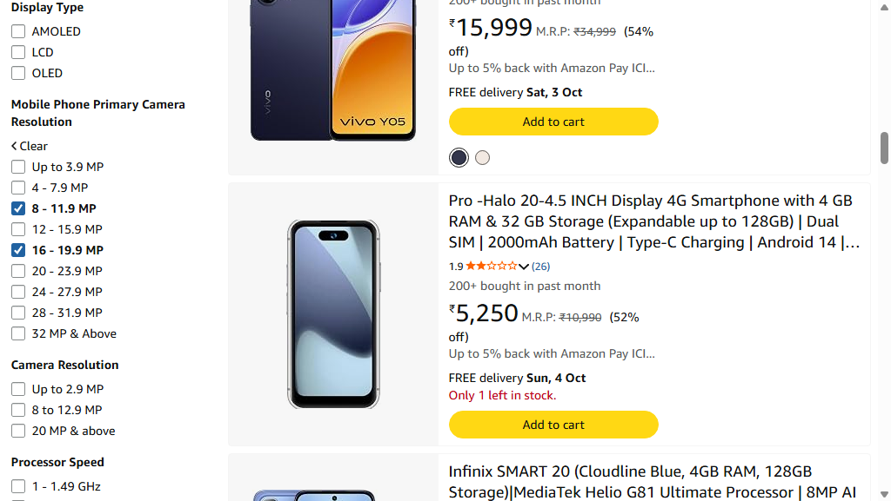
Info 10:20:04 PM 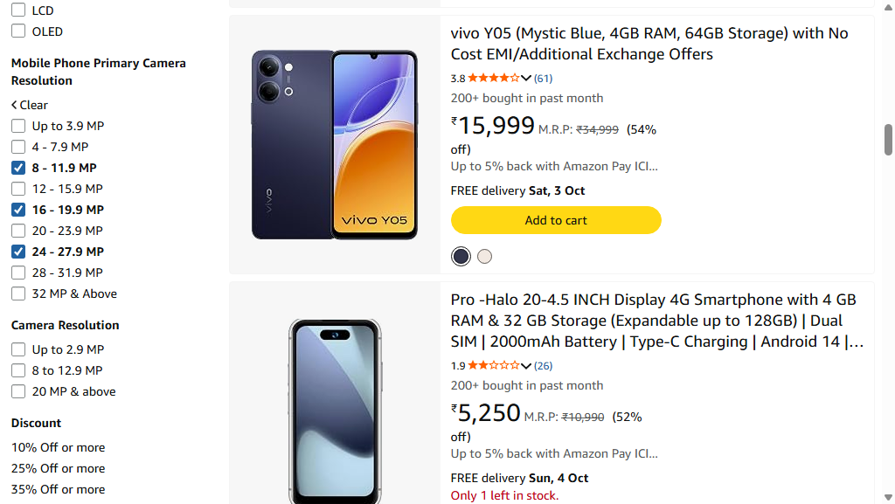
Info 10:20:04 PM 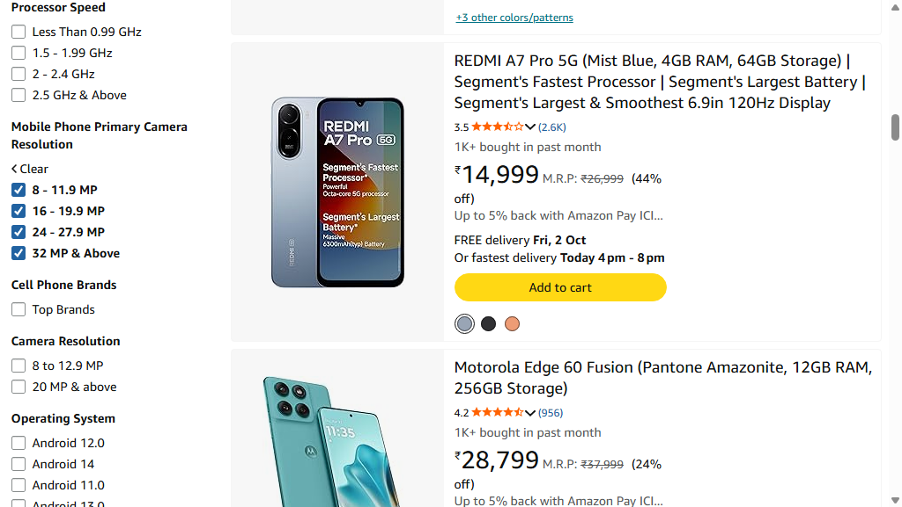
-
verifyingDiscountFilterFunctionality_Tablet_21-53-10
9:53:11 PM / 00:42:14:441 Fail
verifyingDiscountFilterFunctionality_Tablet_21-53-10
09.29.2026 9:53:11 PM 09.29.2026 10:35:26 PM 00:42:14:441 · #test-id=24Status Timestamp Details Info 9:53:11 PM Test Input Parameter: Tablet Fail 10:35:26 PM Info 10:35:26 PM 📂 Logs: Info 10:35:26 PM 📄 verifyingDiscountFilterFunctionality_Tablet_21-53-10.log Info 10:35:26 PM 📸 Screenshots: Info 10:35:26 PM 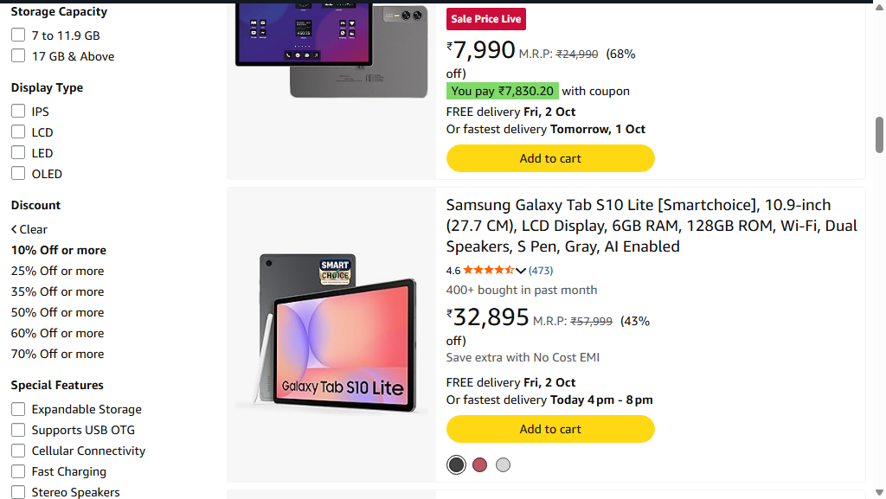
Info 10:35:26 PM 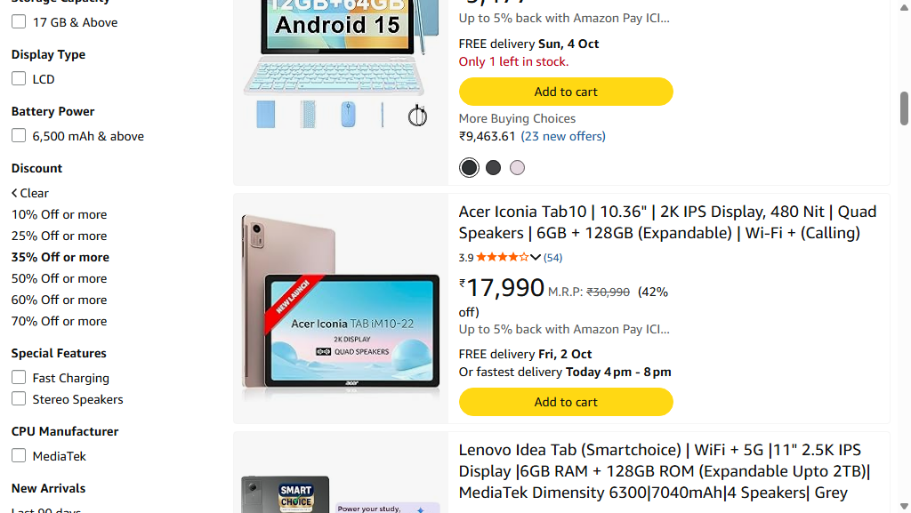
Info 10:35:26 PM 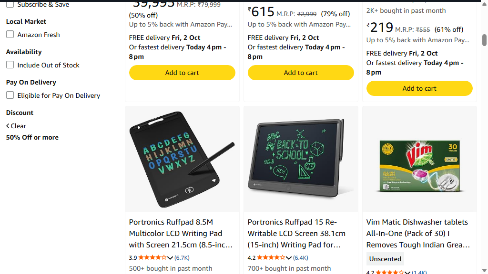
Info 10:35:26 PM 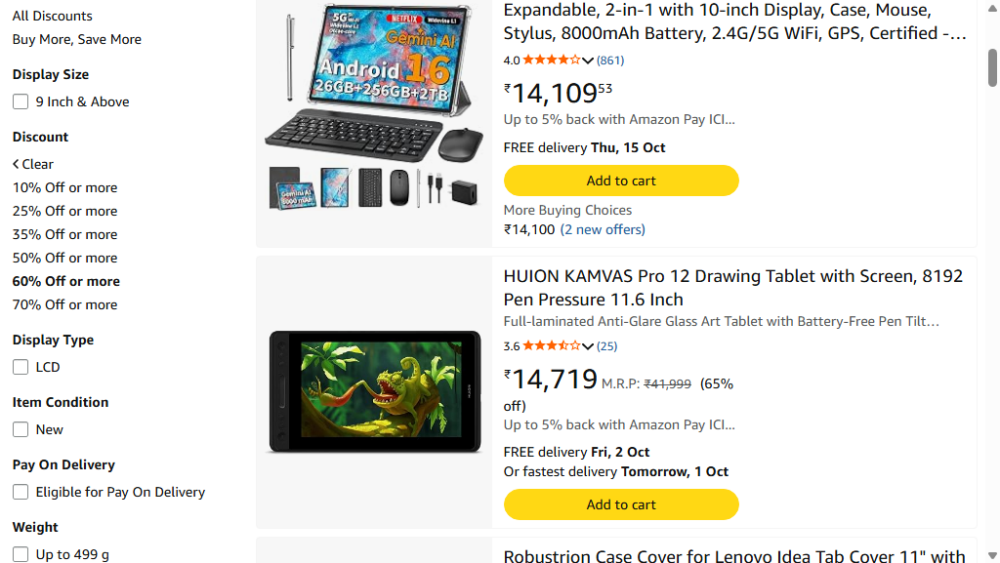
Info 10:35:26 PM 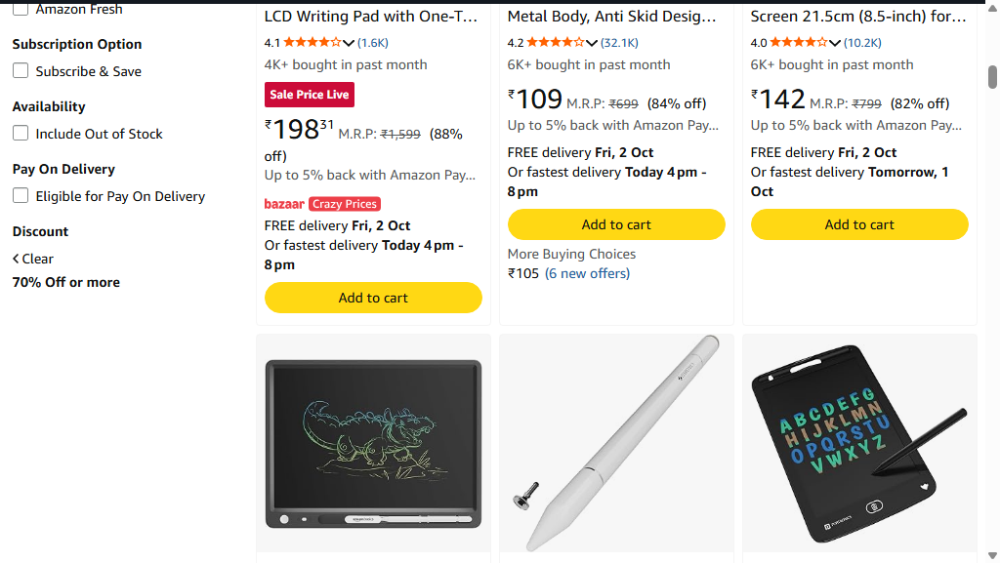
-
verifyingDisplaySizeFilterFunctionality_Tablet_21-54-15
9:54:16 PM / 00:00:08:088 Pass
verifyingDisplaySizeFilterFunctionality_Tablet_21-54-15
09.29.2026 9:54:16 PM 09.29.2026 9:54:24 PM 00:00:08:088 · #test-id=25Status Timestamp Details Info 9:54:16 PM Test Input Parameter: Tablet Pass 9:54:24 PM Test Passed Info 9:54:24 PM 📂 Logs: Info 9:54:24 PM 📄 verifyingDisplaySizeFilterFunctionality_Tablet_21-54-15.log -
verifyingOperatingSystemVersionFilterFunctionality_Mobile_21-54-25
9:54:27 PM / 00:04:33:412 Pass
verifyingOperatingSystemVersionFilterFunctionality_Mobile_21-54-25
09.29.2026 9:54:27 PM 09.29.2026 9:59:00 PM 00:04:33:412 · #test-id=26Status Timestamp Details Info 9:54:27 PM Test Input Parameter: Mobile Pass 9:59:00 PM Test Passed Info 9:59:00 PM 📂 Logs: Info 9:59:00 PM 📄 verifyingOperatingSystemVersionFilterFunctionality_Mobile_21-54-25.log Info 9:59:00 PM 📸 Screenshots: Info 9:59:00 PM 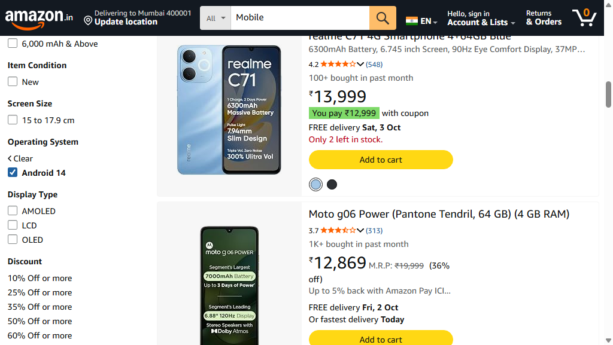
-
verifyingOperatingSystemVersionFilterFunctionality_Laptop_21-59-05
9:59:06 PM / 00:04:53:504 Fail
verifyingOperatingSystemVersionFilterFunctionality_Laptop_21-59-05
09.29.2026 9:59:06 PM 09.29.2026 10:04:00 PM 00:04:53:504 · #test-id=27Status Timestamp Details Info 9:59:06 PM Test Input Parameter: Laptop Fail 10:04:00 PM Info 10:04:00 PM 📂 Logs: Info 10:04:00 PM 📄 verifyingOperatingSystemVersionFilterFunctionality_Laptop_21-59-05.log Info 10:04:00 PM 📸 Screenshots: Info 10:04:00 PM -
verifyingOperatingSystemVersionFilterFunctionality_Tablet_22-04-01
10:04:05 PM / 00:05:30:601 Fail
verifyingOperatingSystemVersionFilterFunctionality_Tablet_22-04-01
09.29.2026 10:04:05 PM 09.29.2026 10:09:36 PM 00:05:30:601 · #test-id=28Status Timestamp Details Info 10:04:05 PM Test Input Parameter: Tablet Fail 10:09:36 PM Info 10:09:36 PM 📂 Logs: Info 10:09:36 PM 📄 verifyingOperatingSystemVersionFilterFunctionality_Tablet_22-04-01.log Info 10:09:36 PM 📸 Screenshots: Info 10:09:36 PM 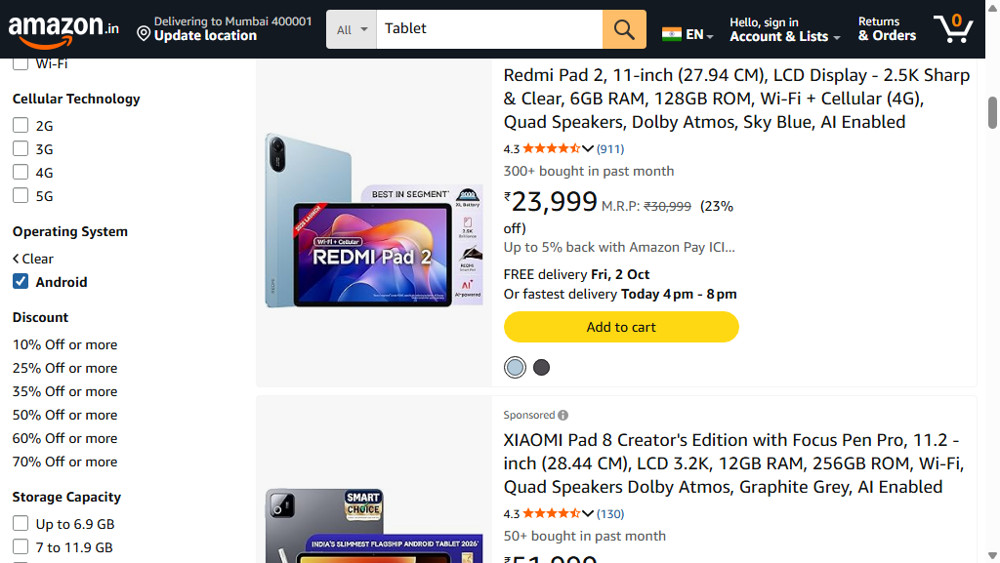
-
verifyingPriceSilderFunctionality_Mobile_22-09-37
10:09:38 PM / 00:00:23:268 Pass
verifyingPriceSilderFunctionality_Mobile_22-09-37
09.29.2026 10:09:38 PM 09.29.2026 10:10:01 PM 00:00:23:268 · #test-id=29Status Timestamp Details Pass 10:10:01 PM Test Passed Info 10:10:01 PM 📂 Logs: Info 10:10:01 PM 📄 verifyingPriceSilderFunctionality_Mobile_22-09-37.log Info 10:10:01 PM 📸 Screenshots: Info 10:10:01 PM 
Info 10:10:01 PM 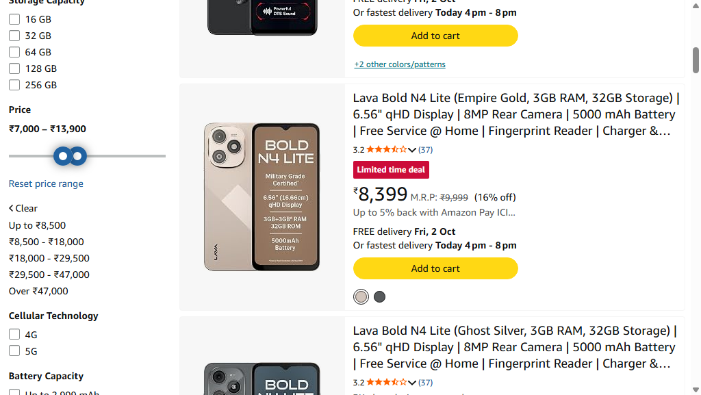
Info 10:10:01 PM 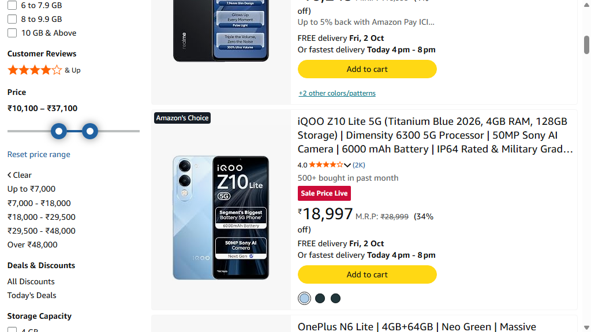
Info 10:10:01 PM 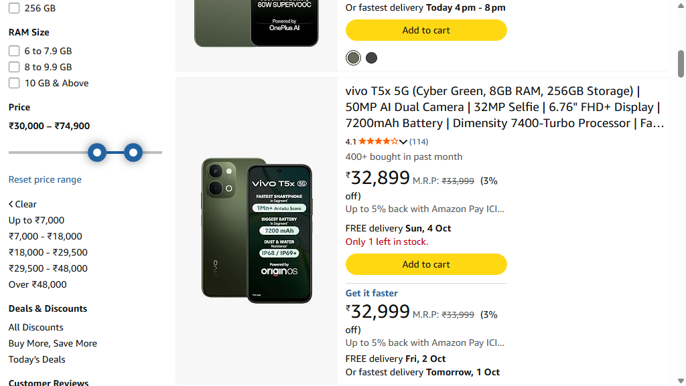
-
verifyingPriceSilderFunctionality_Laptop_22-10-02
10:10:03 PM / 00:00:25:263 Pass
verifyingPriceSilderFunctionality_Laptop_22-10-02
09.29.2026 10:10:03 PM 09.29.2026 10:10:28 PM 00:00:25:263 · #test-id=30Status Timestamp Details Pass 10:10:28 PM Test Passed Info 10:10:28 PM 📂 Logs: Info 10:10:28 PM 📄 verifyingPriceSilderFunctionality_Laptop_22-10-02.log Info 10:10:28 PM 📸 Screenshots: Info 10:10:28 PM Info 10:10:28 PM 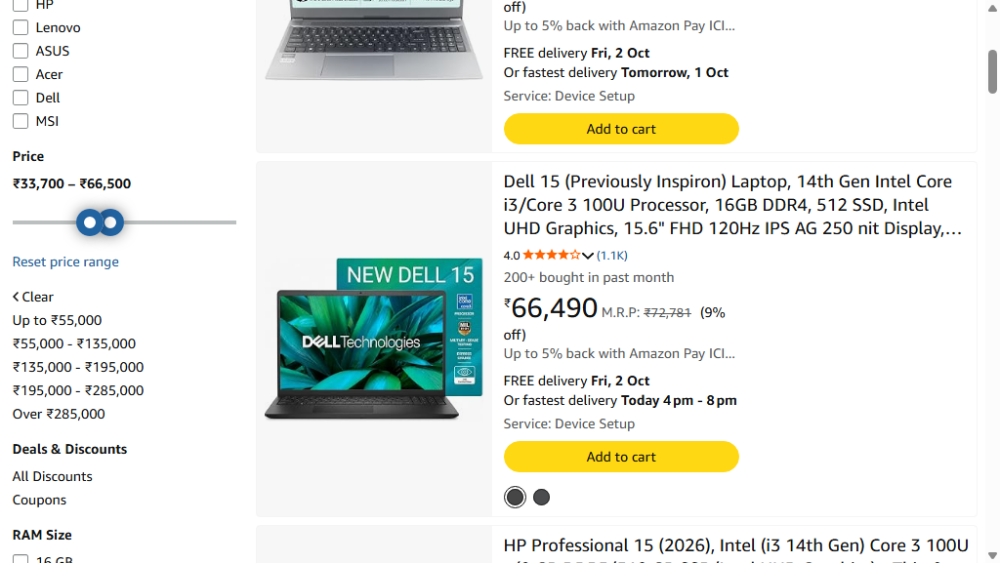
Info 10:10:28 PM Info 10:10:28 PM -
verifyingPriceSilderFunctionality_Tablet_22-10-29
10:10:31 PM / 00:00:16:636 Pass
verifyingPriceSilderFunctionality_Tablet_22-10-29
09.29.2026 10:10:31 PM 09.29.2026 10:10:47 PM 00:00:16:636 · #test-id=31Status Timestamp Details Pass 10:10:47 PM Test Passed Info 10:10:47 PM 📂 Logs: Info 10:10:47 PM 📄 verifyingPriceSilderFunctionality_Tablet_22-10-29.log Info 10:10:47 PM 📸 Screenshots: Info 10:10:47 PM 
Info 10:10:47 PM 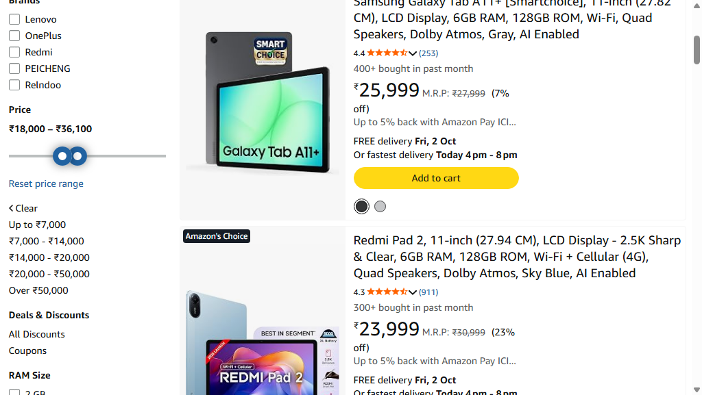
Info 10:10:47 PM 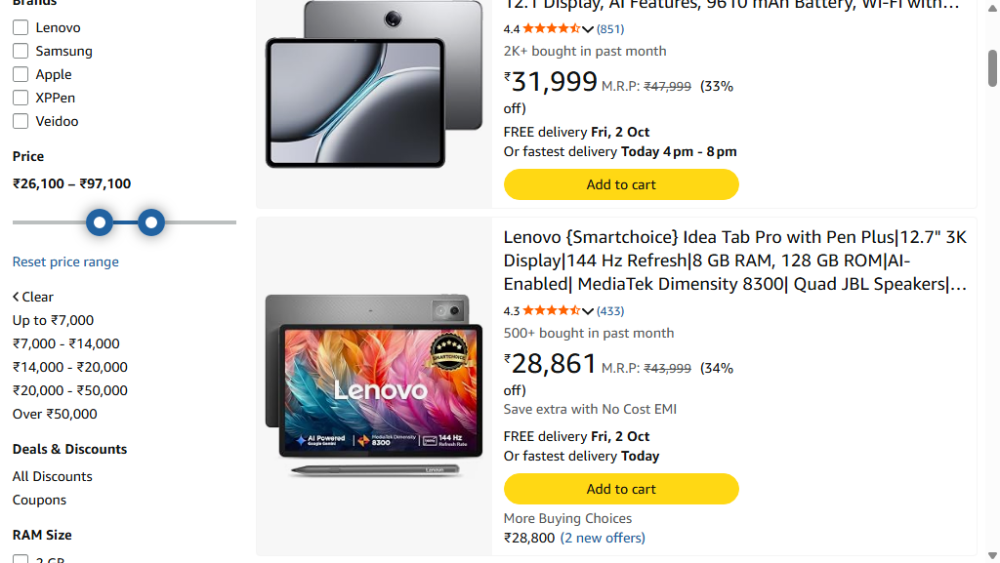
Info 10:10:47 PM 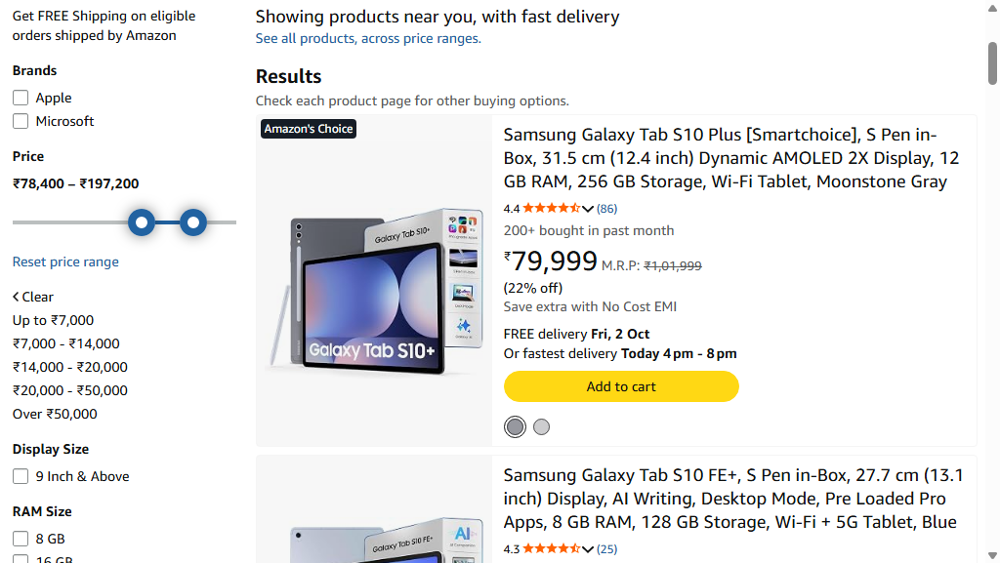
-
verifyingProcessorSpeedFilterFunctionality_Mobile_22-10-49
10:10:51 PM / 00:07:36:399 Fail
verifyingProcessorSpeedFilterFunctionality_Mobile_22-10-49
09.29.2026 10:10:51 PM 09.29.2026 10:18:27 PM 00:07:36:399 · #test-id=32Status Timestamp Details Info 10:10:51 PM Test Input Parameter: Mobile Fail 10:18:27 PM Info 10:18:27 PM 📂 Logs: Info 10:18:27 PM 📄 verifyingProcessorSpeedFilterFunctionality_Mobile_22-10-49.log Info 10:18:27 PM 📸 Screenshots: Info 10:18:27 PM 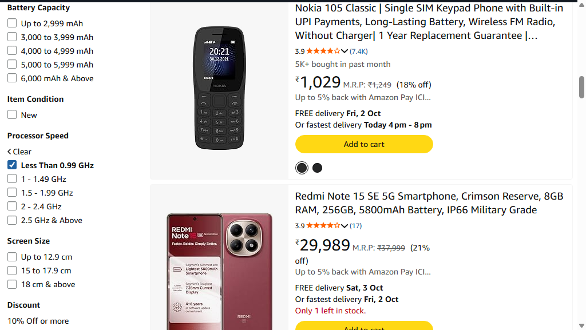
Info 10:18:27 PM 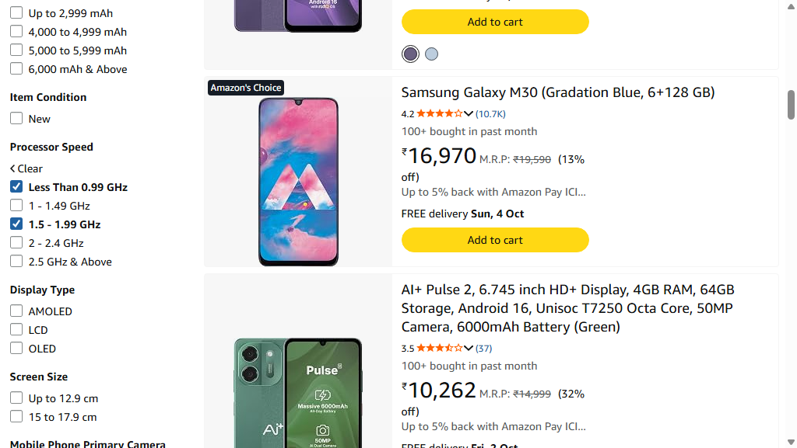
Info 10:18:27 PM 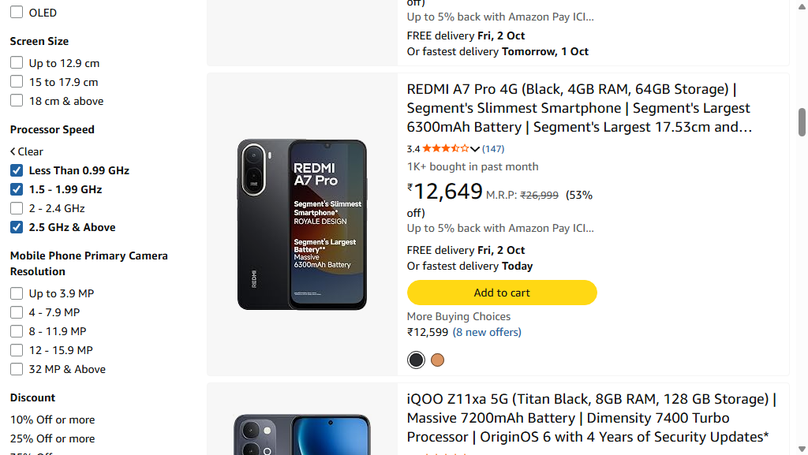
-
verifyingProcessorSpeedFilterFunctionality_Laptop_22-18-28
10:18:30 PM / 00:12:31:960 Fail
verifyingProcessorSpeedFilterFunctionality_Laptop_22-18-28
09.29.2026 10:18:30 PM 09.29.2026 10:31:02 PM 00:12:31:960 · #test-id=33Status Timestamp Details Info 10:18:30 PM Test Input Parameter: Laptop Fail 10:31:02 PM Info 10:31:02 PM 📂 Logs: Info 10:31:02 PM 📄 verifyingProcessorSpeedFilterFunctionality_Laptop_22-18-28.log Info 10:31:02 PM 📸 Screenshots: Info 10:31:02 PM Info 10:31:02 PM Info 10:31:02 PM 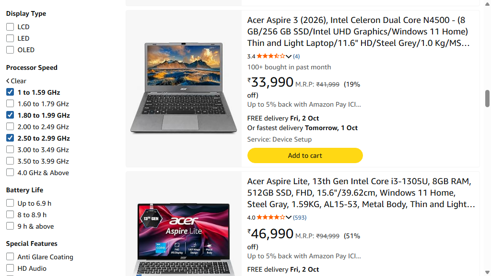
Info 10:31:02 PM 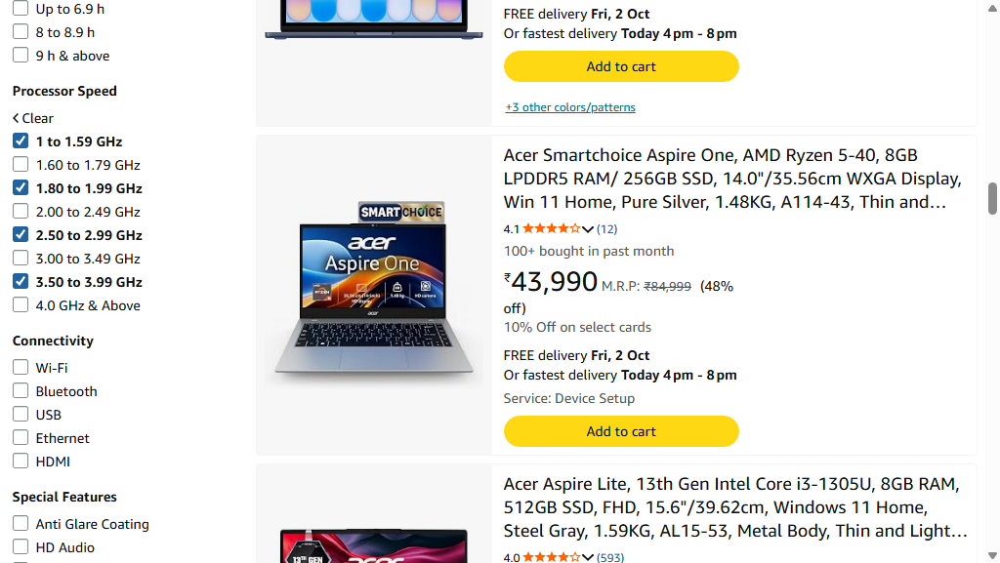
-
verifyingMobilePhonePrimaryCameraResolutionFilterFunctionality_Laptop_22-20-07
10:20:09 PM / 00:00:07:616 Pass
verifyingMobilePhonePrimaryCameraResolutionFilterFunctionality_Laptop_22-20-07
09.29.2026 10:20:09 PM 09.29.2026 10:20:16 PM 00:00:07:616 · #test-id=34Status Timestamp Details Info 10:20:09 PM Test Input Parameter: Laptop Pass 10:20:16 PM Test Passed Info 10:20:16 PM 📂 Logs: Info 10:20:16 PM 📄 verifyingMobilePhonePrimaryCameraResolutionFilterFunctionality_Laptop_22-20-07.log -
verifyingMobilePhonePrimaryCameraResolutionFilterFunctionality_Tablet_22-20-18
10:20:19 PM / 00:00:07:148 Pass
verifyingMobilePhonePrimaryCameraResolutionFilterFunctionality_Tablet_22-20-18
09.29.2026 10:20:19 PM 09.29.2026 10:20:26 PM 00:00:07:148 · #test-id=35Status Timestamp Details Info 10:20:19 PM Test Input Parameter: Tablet Pass 10:20:26 PM Test Passed Info 10:20:26 PM 📂 Logs: Info 10:20:26 PM 📄 verifyingMobilePhonePrimaryCameraResolutionFilterFunctionality_Tablet_22-20-18.log -
verifyingStorageCapacityFilterFunctionality_Mobile_22-20-27
10:20:28 PM / 00:05:11:159 Fail
verifyingStorageCapacityFilterFunctionality_Mobile_22-20-27
09.29.2026 10:20:28 PM 09.29.2026 10:25:40 PM 00:05:11:159 · #test-id=36Status Timestamp Details Info 10:20:28 PM Test Input Parameter: Mobile Fail 10:25:40 PM Info 10:25:40 PM 📂 Logs: Info 10:25:40 PM 📄 verifyingStorageCapacityFilterFunctionality_Mobile_22-20-27.log Info 10:25:40 PM 📸 Screenshots: Info 10:25:40 PM 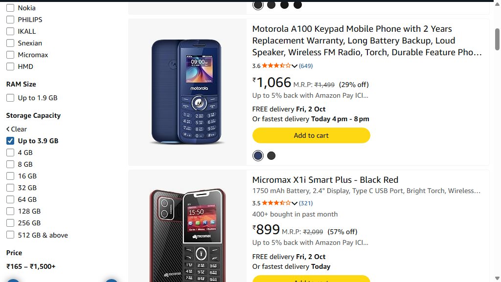
Info 10:25:40 PM 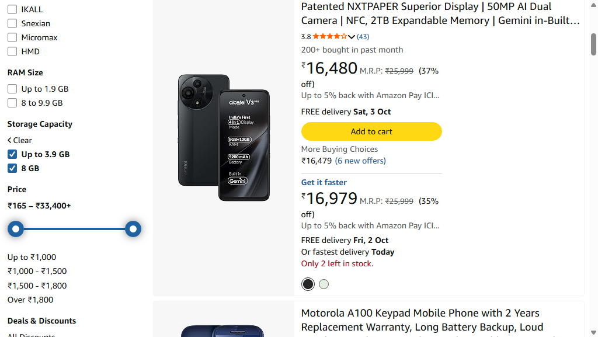
-
verifyingStorageCapacityFilterFunctionality_Laptop_22-25-41
10:25:42 PM / 00:00:13:496 Pass
verifyingStorageCapacityFilterFunctionality_Laptop_22-25-41
09.29.2026 10:25:42 PM 09.29.2026 10:25:56 PM 00:00:13:496 · #test-id=37Status Timestamp Details Info 10:25:42 PM Test Input Parameter: Laptop Pass 10:25:56 PM Test Passed Info 10:25:56 PM 📂 Logs: Info 10:25:56 PM 📄 verifyingStorageCapacityFilterFunctionality_Laptop_22-25-41.log -
verifyingStorageCapacityFilterFunctionality_Tablet_22-25-56
10:25:58 PM / 00:04:31:848 Fail
verifyingStorageCapacityFilterFunctionality_Tablet_22-25-56
09.29.2026 10:25:58 PM 09.29.2026 10:30:30 PM 00:04:31:848 · #test-id=38Status Timestamp Details Info 10:25:58 PM Test Input Parameter: Tablet Fail 10:30:30 PM Info 10:30:30 PM 📂 Logs: Info 10:30:30 PM 📄 verifyingStorageCapacityFilterFunctionality_Tablet_22-25-56.log Info 10:30:30 PM 📸 Screenshots: Info 10:30:30 PM 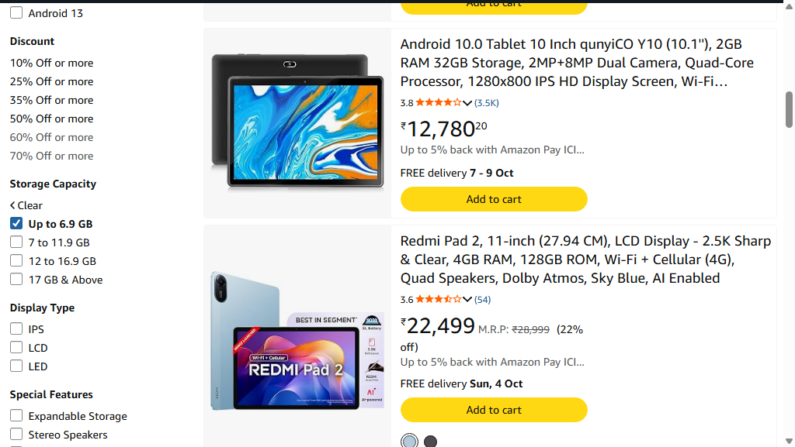
Info 10:30:30 PM 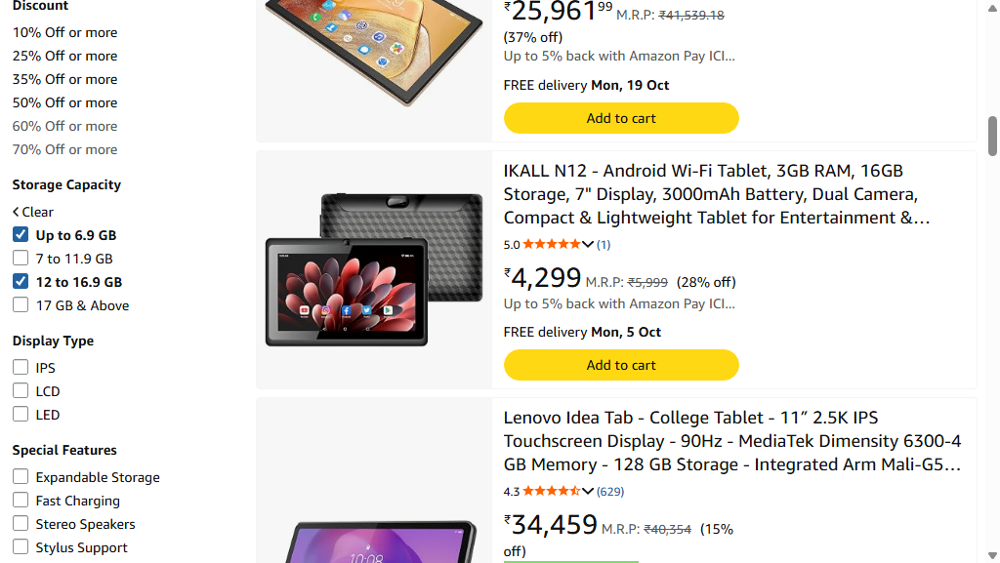
-
verifyingTheBrandsFilterFunctionality_Mobile_22-30-31
10:30:33 PM / 00:01:28:870 Fail
verifyingTheBrandsFilterFunctionality_Mobile_22-30-31
09.29.2026 10:30:33 PM 09.29.2026 10:32:02 PM 00:01:28:870 · #test-id=39Status Timestamp Details Info 10:30:33 PM Test Input Parameter: Mobile Fail 10:32:02 PM Info 10:32:02 PM 📂 Logs: Info 10:32:02 PM 📄 verifyingTheBrandsFilterFunctionality_Mobile_22-30-31.log Info 10:32:02 PM 📸 Screenshots: Info 10:32:02 PM Info 10:32:02 PM Info 10:32:02 PM -
verifyingProcessorSpeedFilterFunctionality_Tablet_22-31-08
10:31:10 PM / 00:00:07:331 Pass
verifyingProcessorSpeedFilterFunctionality_Tablet_22-31-08
09.29.2026 10:31:10 PM 09.29.2026 10:31:17 PM 00:00:07:331 · #test-id=40Status Timestamp Details Info 10:31:10 PM Test Input Parameter: Tablet Pass 10:31:17 PM Test Passed Info 10:31:17 PM 📂 Logs: Info 10:31:17 PM 📄 verifyingProcessorSpeedFilterFunctionality_Tablet_22-31-08.log -
verifyingTheBrandsFilterFunctionality_Laptop_22-32-02
10:32:04 PM / 00:01:28:075 Pass
verifyingTheBrandsFilterFunctionality_Laptop_22-32-02
09.29.2026 10:32:04 PM 09.29.2026 10:33:32 PM 00:01:28:075 · #test-id=41Status Timestamp Details Info 10:32:04 PM Test Input Parameter: Laptop Pass 10:33:32 PM Test Passed Info 10:33:32 PM 📂 Logs: Info 10:33:32 PM 📄 verifyingTheBrandsFilterFunctionality_Laptop_22-32-02.log Info 10:33:32 PM 📸 Screenshots: Info 10:33:32 PM Info 10:33:32 PM Info 10:33:32 PM -
verifyingTheBrandsFilterFunctionality_Tablet_22-33-33
10:33:36 PM / 00:01:26:481 Fail
verifyingTheBrandsFilterFunctionality_Tablet_22-33-33
09.29.2026 10:33:36 PM 09.29.2026 10:35:03 PM 00:01:26:481 · #test-id=42Status Timestamp Details Info 10:33:36 PM Test Input Parameter: Tablet Fail 10:35:03 PM Info 10:35:03 PM 📂 Logs: Info 10:35:03 PM 📄 verifyingTheBrandsFilterFunctionality_Tablet_22-33-33.log Info 10:35:03 PM 📸 Screenshots: Info 10:35:03 PM Info 10:35:03 PM Info 10:35:03 PM
-
java.lang.AssertionError
18 tests
java.lang.AssertionError
18 failed
Started
Sep 29, 2026 09:32:34 PM
Ended
Sep 29, 2026 10:35:27 PM
Tests Passed
24
Tests Failed
18
Tests
Log events
Timeline